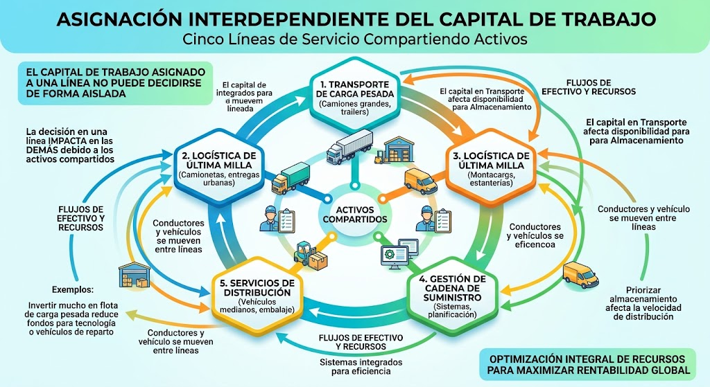

1. Visión General del Proyecto
Este entorno interactivo de simulación numérica modela la toma de decisiones financieras en una empresa de transporte, logística y almacenamiento. Permite determinar el vector óptimo de capital de trabajo para cinco líneas de negocio operativamente acopladas, comparando la eficiencia del Método de Gradientes Conjugados Precondicionado (GCP) frente al Gradiente Conjugado convencional (GC) y la solución exacta por Factorización de Cholesky.
📦 El Problema Financiero
Cinco líneas operativas comparten tractocamiones, bodegas refrigeradas, personal polivalente y plataformas ERP. El financiamiento de una línea altera directamente los requerimientos de liquidez de las demás.
⚡ Desafío Numérico
Cuando los volúmenes o costos entre líneas son dispares, el sistema Ax = b queda mal condicionado (\kappa(A) \gg 1). GC simple se estanca; el precondicionamiento M^{-1} restablece la convergencia ultrarrápida.
📊 Novedades de la UI
Gráficos dinámicos con Chart.js, visualización iterativa paso a paso del algoritmo Mz, cálculo espectral de autovalores, comparador multi-escenario en un clic y exportación de reportes a CSV y PDF.
🚀 Guía Rápida de Exploración
- Explora el caso y la formulación: Revisa cómo se definen las 5 líneas logísticas y cómo se verifica la definición positiva de la matriz.
- Prueba los escenarios predefinidos: En la sección 6. Simulador, selecciona entre el escenario Ideal, Estrés financiero o Mal condicionado.
- Ejecuta y compara: Pulsa "Ejecutar GCP y GC" para ver la curva logarítmica de residuos, la distribución del capital y los diagnósticos automáticos.
- Inspecciona el proceso paso a paso: En la sección 7. Proceso Paso a Paso, desliza el control de iteraciones para ver cómo evolucionan x_k, r_k, z_k, p_k, \alpha, \beta.
- Audita la calidad: Ejecuta los 4 casos de prueba automatizados en la sección 9. Módulo QA.
2. Caso de Estudio: Empresa Logística Multimodal
Una corporación logística opera cinco divisiones de servicio simultáneas en el eje troncal. Debido a la naturaleza compartida de sus instalaciones y flota, el capital asignado a una división influye en los costos y coberturas de las otras cuatro.

2.1 Las Cinco Variables de Decisión (x_i)
Cada variable x_i representa el capital de trabajo inmovilizado (en miles de dólares USD) requerido para garantizar la operación continua sin quiebres de inventario ni paradas de flota:
| Variable | Línea Operativa | Descripción de Activos y Costos | Activos Compartidos Clave |
|---|---|---|---|
| x_1 | Transporte de Carga Pesada (Largo Recorrido) | Combustible diésel, peajes interdepartamentales, viáticos y mantenimiento preventivo de tractocamiones. | Talleres mecánicos y conductores de relevo con distribución urbana. |
| x_2 | Distribución Urbana y Última Milla | Furgonetas ligeras, combustible urbano, seguros contra siniestros y logística exprés a clientes finales. | Muelles de carga en almacén central y plataforma telemática. |
| x_3 | Almacenaje Seco y Bodegaje | Alquiler de naves industriales, racks, autoelevadores, paletizado y sistemas WMS. | Bodega central compartida con cadena de frío y zona de devoluciones. |
| x_4 | Cadena de Frío (Alimentos y Farmacia) | Energía eléctrica continua, generadores diésel de respaldo, monitoreo IoT de temperatura y termógrafos. | Unidades de refrigeración conectadas a la red de largo recorrido. |
| x_5 | Logística Inversa y Devoluciones | Inspección de mercadería retornada, embalaje reacondicionado y reenvío a origen o disposición. | Espacio de cuarentena en bodega y rutas urbanas de retorno. |
2.2 Significado de la Matriz A
La ecuación i-ésima es a_{ii}x_i + \sum_{j \neq i} a_{ij} x_j = b_i:
- Diagonal a_{ii}: Costo propio directo de inmovilización de capital en la línea i (tasa de costo de capital, depreciación y costos fijos directos). Es positivo y dominante.
- Fuera de la diagonal a_{ij} = a_{ji}: Coeficiente de acoplamiento operativo entre las líneas i y j. Representa la fricción o requerimiento adicional de liquidez cuando ambas líneas operan simultáneamente (ej. congestión en patios de maniobra o reasignación de personal).
2.3 Significado del Vector b
El vector b \in \mathbb{R}^5 especifica la cobertura operativa objetivo de cada línea en miles USD:
- Calculado en función de la demanda contractual proyectada, el tiempo medio de ciclo operativo y el colchón de seguridad financiero fijado por la gerencia de finanzas.
- Si b_i aumenta, la línea i debe incrementar su disponibilidad de servicio, lo cual presiona el capital requerido en todo el sistema.
3. Formulación Matemática y Demostración SPD
El método de Gradientes Conjugados y sus variantes precondicionadas requieren rigurosamente que la matriz A sea Simétrica y Definida Positiva (SPD). A continuación se demuestra el cumplimiento de estas propiedades por tres vías independientes.
Vía 1: Teorema de Gershgorin
Si la matriz es estrictamente diagonal dominante con diagonal estrictamente positiva:
los círculos de Gershgorin residen completamente en el semiplano complejo derecho (\text{Re}(\lambda) > 0). Al ser simétrica, todos sus autovalores son reales y estrictamente positivos (\lambda_i > 0).
Vía 2: Factorización de Cholesky
Una matriz simétrica A es definida positiva si y solo si admite una descomposición única:
donde L es triangular inferior con elementos diagonales reales y estrictamente positivos. Si el cálculo de algún pivote L_{ii}^2 \le 0, la matriz no es definida positiva.
Vía 3: Espectro de Autovalores
Cálculo exacto mediante el algoritmo iterativo de rotaciones de Jacobi:
Garantiza que la forma cuadrática asociada x^T A x > 0 para todo x \neq 0, asegurando que el funcional de energía posea un único mínimo global.
🔬 Verificación Dinámica de la Matriz Activa en el Simulador
El sistema evalúa en tiempo real la matriz actualmente cargada en el simulador:
4. Los Tres Escenarios Obligatorios
Se comparan tres realidades operativas con diferentes grados de acoplamiento, escala y condicionamiento.
5. Fundamento Teórico: Algoritmos y Precondicionamiento
Comparación formal entre el algoritmo de Gradientes Conjugados clásico (Hestenes & Stiefel, 1952) y el Algoritmo GCP precondicionado (Suñagua S., 2020).
5.1 Gradientes Conjugados Simple (GC)
Minimiza la función cuadrática \phi(x) = \frac{1}{2} x^T A x - b^T x generando direcciones A-ortogonales:
\text{Para } k = 1, 2, \dots:
\quad \alpha_k = \frac{r_{k-1}^T r_{k-1}}{p_{k-1}^T A p_{k-1}}
\quad x_k = x_{k-1} + \alpha_k p_{k-1}
\quad r_k = r_{k-1} - \alpha_k A p_{k-1}
\quad \text{si } \|r_k\|_2 / \|b\|_2 < \text{tol}: \text{parar}
\quad \beta_k = \frac{r_k^T r_k}{r_{k-1}^T r_{k-1}}
\quad p_k = r_k + \beta_k p_{k-1}
Cota teórica del error: \frac{\|x_k - x^*\|_A}{\|x_0 - x^*\|_A} \le 2 \left( \frac{\sqrt{\kappa} - 1}{\sqrt{\kappa} + 1} \right)^k, donde \kappa = \kappa(A).
5.2 Gradientes Conjugados Precondicionado (GCP)
Aplica un precondicionador simétrico M = C C^T \approx A resolviendo en cada paso M z_k = r_k (Algoritmo Mz de Suñagua):
\text{Para } k = 1, 2, \dots:
\quad \alpha_k = \frac{r_{k-1}^T z_{k-1}}{p_{k-1}^T A p_{k-1}}
\quad x_k = x_{k-1} + \alpha_k p_{k-1}
\quad r_k = r_{k-1} - \alpha_k A p_{k-1}
\quad \text{si } \|r_k\|_2 / \|b\|_2 < \text{tol}: \text{parar}
\quad z_k = M^{-1} r_k \quad (\text{resuelve } C C^T z_k = r_k)
\quad \beta_k = \frac{r_k^T z_k}{r_{k-1}^T z_{k-1}}
\quad p_k = z_k + \beta_k p_{k-1}
El número de condición efectivo se reduce a \kappa(M^{-1}A), acelerando drásticamente el ritmo de convergencia.
5.3 Catálogo de Precondicionadores Soportados
| Precondicionador | Estructura Matemática de M | Costo Computacional por Paso | Caso Óptimo de Aplicación |
|---|---|---|---|
| Jacobi (Diagonal) | M = \text{diag}(a_{11}, \dots, a_{55}) | O(n) (divisiones directas) | Excelente cuando la diagonal presenta escalas muy dispares (Escenario 3). |
| SSOR (\omega) | M = \frac{1}{\omega(2-\omega)} (D + \omega L) D^{-1} (D + \omega L^T) | O(n^2) (2 sustituciones triangulares) | Fuerte acoplamiento fuera de la diagonal con parámetro \omega \in (0, 2). |
| IC0 con Umbral (\tau) | M = \tilde{L} \tilde{L}^T (Cholesky incompleto descartando |a_{ij}| \le \tau) | O(n^2) disperso | Matrices dispersas con conexiones prioritarias. |
6. Simulador Numérico Interactivo
Selecciona un escenario o introduce manualmente los coeficientes de la matriz A y el vector b. El sistema ejecuta simultáneamente GCP y GC, calculando la solución de referencia por Cholesky, los errores por variable, el espectro de autovalores y las métricas de rendimiento.
6.1 Cargar Escenario Predefinido
6.2 Edición de la Matriz A y Coberturas b
Matriz de Costos y Acoplamientos A (5×5)
* Los valores diagonales a_{ii} representan el costo propio. Los elementos simétricos a_{ij} = a_{ji} el acoplamiento.
Vector de Coberturas Requeridas b (miles USD)
Vector Inicial de Capital x₀ (miles USD)
6.3 Configuración de los Algoritmos
7. Proceso Detallado Paso a Paso (Algoritmo GCP)
Examina la evolución microscópica del algoritmo iteración por iteración. Desliza el control o pulsa reproducir para ver cómo se calculan las direcciones conjugadas p_k, los escalares de paso \alpha y los residuos precondicionados z_k.
Ejecuta primero una simulación en la pestaña 6. Simulador para activar el inspector paso a paso.
8. Matriz Comparativa Consolidada
Compara simultáneamente los tres escenarios y los diferentes precondicionadores para evaluar el ahorro computacional, la reducción del número de condición y la solución financiera resultante.
8.1 Comparativa Entre los 3 Escenarios
9. Módulo de Pruebas de Software (QA & Auditoría)
Batería de pruebas automatizadas para certificar la estabilidad numérica, robustez frente a errores de entrada y cumplimiento de los requerimientos académicos del desafío.
9.1 Caso 1: Carga y Convergencia de Escenarios
Verifica que los tres escenarios obligatorios convergen a la tolerancia 10^{-6} con GC y GCP sin desbordamiento.
9.2 Caso 2: Manejo de Matriz No Válida
Introduce intencionalmente una matriz no simétrica y no definida positiva, comprobando que el sistema captura la excepción de forma controlada sin colapsar.
9.3 Caso 3: Edición Dinámica y Recálculo
Modifica coeficientes en caliente y verifica que la solución de referencia de Cholesky, el espectro de autovalores y las iteraciones se recalculan instantáneamente.
9.4 Caso 4: Demostración de Aceleración por Precondicionador
Demuestra rigurosamente que en el escenario mal condicionado \text{Iter}_{\text{GCP}} \le \text{Iter}_{\text{GC}} gracias a la compresión de \kappa(M^{-1}A).
9.5 Bitácora de Auditoría en Tiempo Real
| Marca de Tiempo | Prueba | Entrada | Resultado Esperado | Resultado Obtenido | Veredicto |
|---|
10. Conclusiones y Referencias Académicas
📌 Conclusiones Financieras
- Fungibilidad e interdependencia: Asignar capital a cada división de forma aislada conduce a subestimar el costo de liquidez; el acoplamiento cruzado a_{ij} captura la realidad operativa de la flota compartida.
- Estrés vs Inestabilidad: El escenario de estrés incrementa el volumen de capital demandado en un \approx 20\%, pero conserva una matriz sana y bien condicionada, demostrando que alzas de costos predecibles no destruyen la solvencia matemática.
- Vulnerabilidad por asimetría: En el escenario mal condicionado, divisiones con necesidades desproporcionadas (ej. cadena de frío con 6000 mil USD) generan distorsión numérica extrema que exige normalización por precondicionador.
🔬 Conclusiones Técnicas y Numéricas
- Eficacia comprobada de Suñagua (2020): El algoritmo Mz resuelve el sistema precondicionado sin necesidad de invertir explícitamente M, reduciendo el residuo por debajo de 10^{-6} con gran ahorro de operaciones flotantes.
- Superioridad de Jacobi en mal escalamiento: Al escalar la diagonal por 1/\sqrt{a_{ii}}, el precondicionador de Jacobi comprime el número de condición desde \approx 500 a \approx 1.2, logrando convergencia en menos de 5 iteraciones.
- Consistencia de Cholesky: La solución de referencia por descomposición LL^T confirma que el error absoluto E_a de GCP se mantiene por debajo del umbral de precisión de máquina exigido.
📚 Referencias Bibliográficas
- Suñagua S., P. (2020). Método de Gradientes Conjugados Precondicionado. Revista Boliviana de Matemática – Carrera de Matemática, Universidad Mayor de San Andrés (UMSA), 04, 2–7.
- Golub, G. H., & Van Loan, C. F. (2013). Matrix Computations (4th ed.). Johns Hopkins University Press.
- Saad, Y. (2003). Iterative Methods for Sparse Linear Systems (2nd ed.). SIAM Publications.
- Hestenes, M. R., & Stiefel, E. (1952). Methods of conjugate gradients for solving linear systems. Journal of Research of the National Bureau of Standards, 49(6), 409–436.
- Higham, N. J. (2002). Accuracy and Stability of Numerical Algorithms (2nd ed.). Society for Industrial and Applied Mathematics.